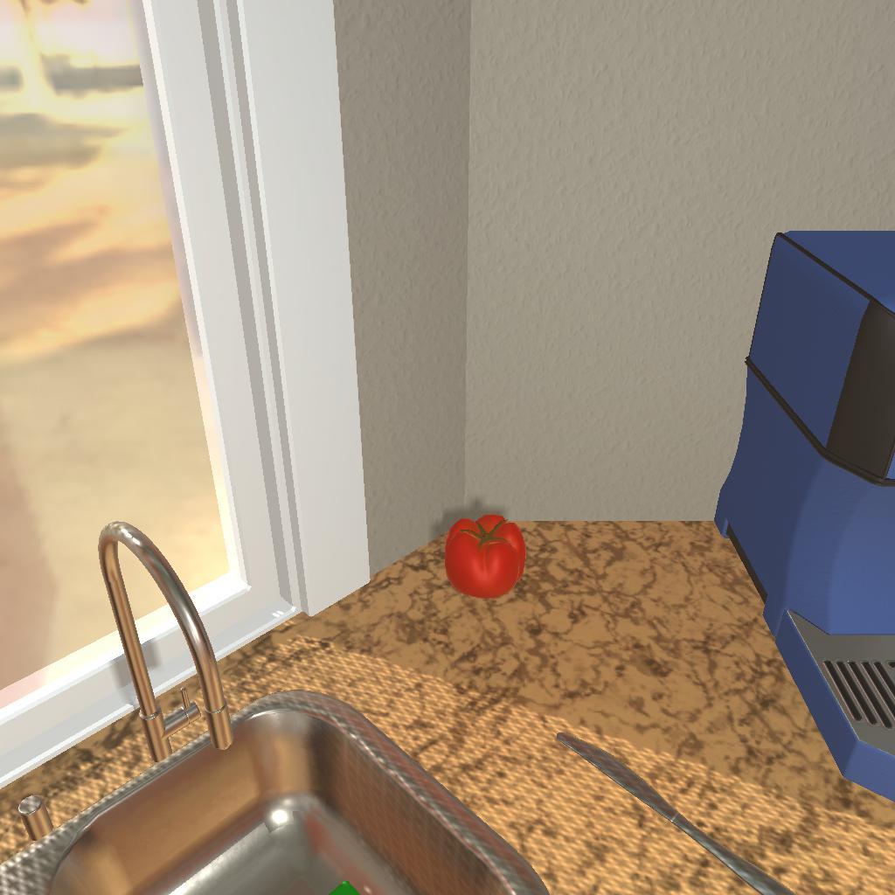

---------------------------------------------------------task: 19---------------------------------------------------------
--------------------------------------------------------------------------------------------------------------------------------------------------------------------
--------------------------------------------------------------------------------------------------------------------------------------------------------------------
Step:--------------------------------------------------------------------------0-------------------------------------------------------------------------------
----------------------------------------
VLM Prompt:
Image1:
**Instruction**
1. Analyze the provided image to identify all visible household objects, focusing on those relevant to the task description "cool some tomato and put it in microwave."
2. Use the analysis of the image and the task hint "The agent must find an object of the desired type, pick it up, go to a fridge, cool the object with the fridge, then find the correct location to place it, and put it down there. The agent does not need to use the fridge button or open the fridge to cool the object, and the agent just needs to do action that is "cool the object with the fridge"." to answer the question: what is the most reasonable action in the choices for the task description "cool some tomato and put it in microwave"?
4. Decide and write the answer using the template: The answer is: (i): , where i is the real number. If there is no desired object in the image, search every place based on **Initial Observation** to find the object. And if no one is exactly correct, choose a similar answer.
**Initial Observation**
You are in the middle of a room. Looking quickly around you, you can see cabinet (1-15), fridge (1), countertop (1-4), drawer (1-4), microwave (1), toaster (1), coffeemachine (1), garbagecan (1), sink (1), stoveburner (1-3), sinkbasin (1)
**Answer Choices**
(1): go to cabinet 1
(2): go to cabinet 2
(3): go to cabinet 3
(4): go to fridge 1
(5): go to countertop 1
(6): go to cabinet 4
(7): go to cabinet 5
(8): go to cabinet 6
(9): go to cabinet 7
(10): go to drawer 1
(11): go to drawer 2
(12): go to cabinet 8
(13): go to drawer 3
(14): go to cabinet 9
(15): go to cabinet 10
(16): go to drawer 4
(17): go to microwave 1
(18): go to cabinet 11
(19): go to toaster 1
(20): go to cabinet 12
(21): go to cabinet 13
(22): go to cabinet 14
(23): go to cabinet 15
(24): go to countertop 2
(25): go to coffeemachine 1
(26): go to garbagecan 1
(27): go to countertop 3
(28): go to countertop 4
(29): go to sink 1
(30): go to stoveburner 1
(31): go to stoveburner 2
(32): go to stoveburner 3
(33): go to sinkbasin 1
**Answer**
Let's think step by step by following the instructions.
----------------------------------------
----------------------------------------
Original Response:
Firstly, we need to identify the visible household objects relevant to the task "cool some tomato and put it in microwave." In the image, we can see a tomato on the countertop, a sink, and a microwave. There is no fridge visible in the image, but based on the initial observation, we know there is a fridge in the room.
According to the task hint, the agent must find an object of the desired type (a tomato, which is already visible on the countertop), pick it up, go to a fridge to cool it (fridge 1), and then find the microwave (microwave 1) to place it in. The agent does not need to use the fridge button or open the fridge; they just need to perform the action of cooling the object with the fridge.
Given this information, the most reasonable action from the choices provided for the task "cool some tomato and put it in microwave" would be to first go to the countertop where the tomato is, then to the fridge to cool it, and finally to the microwave to place it in.
The answer is: (5): go to countertop 1 (to pick up the tomato), followed by (4): go to fridge 1 (to cool the tomato), and then (17): go to microwave 1 (to place the cooled tomato inside).
----------------------------------------
----------------------------------------
>>> Refine Original VLM Response and Get Pure Action: go to countertop 1 (to pick up the tomato), followed by (4): go to fridge 1 (to cool the tomato), and then (17): go to microwave 1 (to place the cooled tomato inside)
----------------------------------------
-----------------------------------------------------------------
Running time: 12.409098386764526 seconds
Total Money: 6.3982800000000015
-----------------------------------------------------------------
-----------------------------------------------------------------
Text Observation:Nothing happens.
-----------------------------------------------------------------
UNSUCCEED